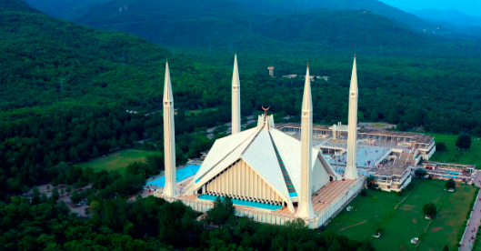
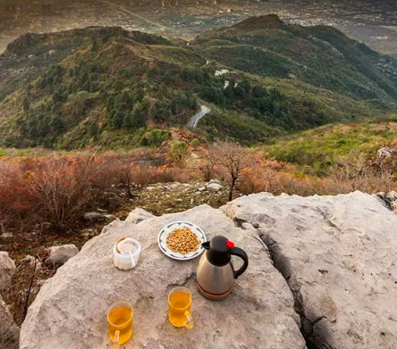
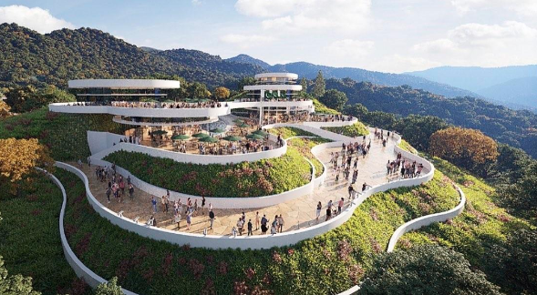
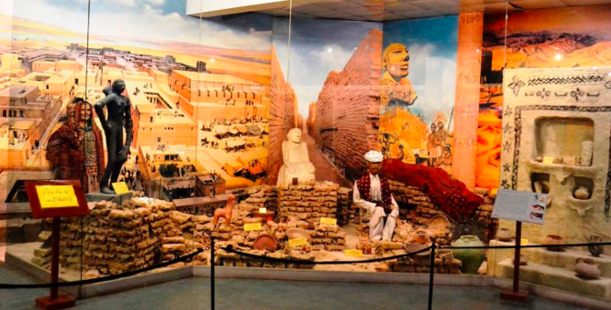
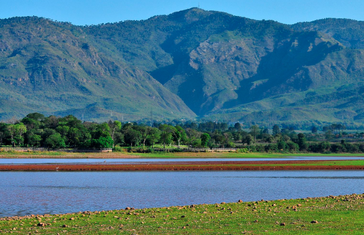
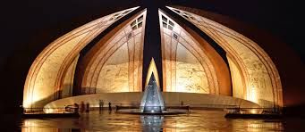

Why Visit Islamabad?
Islamabad, the capital city of Pakistan, is known for its peaceful atmosphere, modern architecture, and natural beauty. Nestled at the foothills of the Margalla Hills, the city offers a perfect blend of urban development and nature. Planned and developed in the 1960s, Islamabad stands out for its wide roads, organized sectors, and clean environment. Unlike many other cities, it enjoys a calm pace of life, making it ideal for families, tourists, and nature lovers.With its educated population, lush greenery, and well-maintained infrastructure, Islamabad truly represents the modern and progressive face of Pakistan. Whether you're exploring its serene trails or admiring its architectural wonders, Islamabad leaves a lasting impression on every visitor.
Some Famous Places To Visit In Islamabad:
Faisal Mosque
Faisal Mosque is located at the foothills of the Margalla Hills and features unique modern architecture. It is one of the largest mosques in the world and a symbol of Islamic heritage.
Why Visit Faisal Mosque?
Iconic Architecture: Its design is inspired by a Bedouin tent, making it stand out from traditional mosque structures.
Stunning Location: Located at the Margalla Hills' base, it offers breathtaking views and peaceful surroundings.
Religious and Cultural Significance: As one of the largest mosques globally, it holds great significance for Muslims and welcomes all visitors.

Image: Faisal Mosque, Islamabad
Margalla Hills
Margalla Hills National Park is located on the northern edge of Islamabad and offers incredible hiking trails, wildlife, and panoramic views of the city.
Spanning over 17,000 hectares, the park is a haven for nature lovers and adventure seekers alike. Whether you're an avid hiker looking to conquer the popular Trail 5 or simply seeking a peaceful escape from the urban rush, Margalla Hills provides the perfect blend of serenity and scenic beauty. The park is also home to various species of birds, monkeys, and even leopards, making it a unique spot for wildlife enthusiasts. Early mornings and sunsets here are especially breathtaking, offering unforgettable views of Islamabad nestled below the lush green hills.
Why Visit Margalla Hills?
Nature Trails: With various trails like Trail 5 and Trail 3, it's ideal for hikers and nature lovers.
Wildlife: The park is home to various species of animals, including leopards, monkeys, and diverse birds.

Image: Margalla Hills National Park
Daman-e-Koh
Daman-e-Koh is a popular viewpoint in Islamabad that provides a panoramic view of the city, especially beautiful during the evening.
Why Visit Daman-e-Koh?
Beautiful Views: Daman-e-Koh offers stunning views of Islamabad, especially during sunrise and sunset.
Relaxing Spot: It’s a peaceful spot with cool air, making it a perfect place for a picnic or a short getaway.

Image: Daman-e-Koh Viewpoint
Lok Virsa Museum
Lok Virsa Museum showcases the cultural heritage of Pakistan, including traditional crafts, costumes, and artifacts from various regions of the country.
Why Visit Lok Virsa Museum?
Cultural Heritage: The museum offers an insight into Pakistan's rich culture through its diverse exhibitions.
Traditional Artifacts: The museum showcases traditional music instruments, embroidery, and indigenous clothing.

Image: Lok Virsa Museum
Rawal Lake
Rawal Lake is a large reservoir located near the city, offering recreational activities like boating and fishing. It's a great spot for picnics and relaxation.
Why Visit Rawal Lake?
Boating: Enjoy a peaceful boat ride on the lake while surrounded by lush greenery.
Picnic Spots: The area around Rawal Lake is perfect for a family picnic, offering shaded areas and scenic views.

Image: Rawal Lake, Islamabad
Pakistan Monument
The Pakistan Monument is a symbol of the four provinces of Pakistan. It is shaped like a flower with four petals, each representing one of Pakistan’s provinces.
Why Visit Pakistan Monument?
Symbol of Unity: The monument represents the cultural and geographical unity of Pakistan’s provinces.
Scenic Views: Visitors can enjoy beautiful views of Islamabad from the monument's surroundings.

Image: Pakistan Monument
Explore Other Cities of Pakistan
Pakistan is home to many vibrant cities, each offering a unique cultural, historical, and culinary experience. Don’t miss out on exploring more!